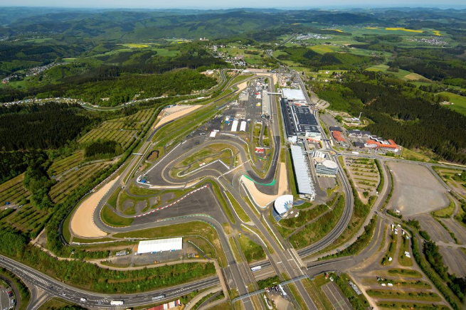
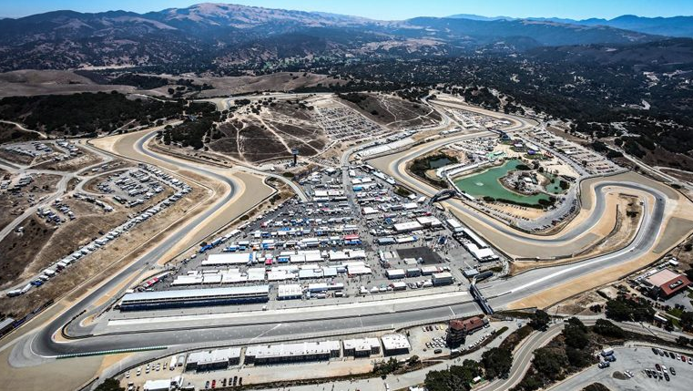
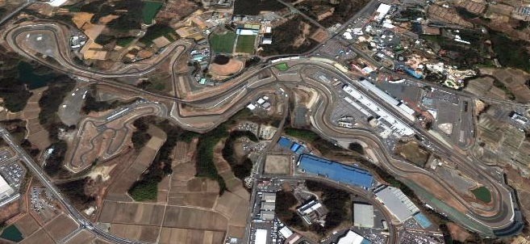
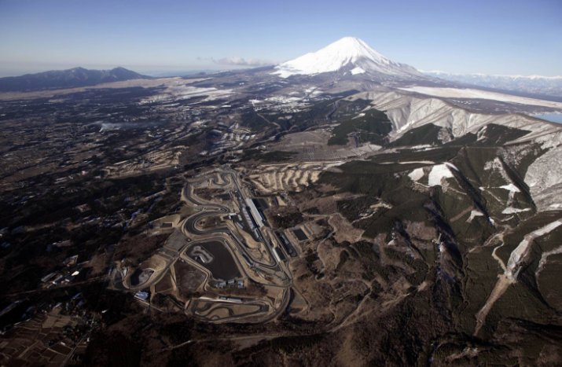

Nurburging.
Address: Nürburgring GmbH, Otto-Flimm-Straße, D-53520 Nürburg, Germany
3.199 miles / 5.148 km
Laguna Seca.
Address: Mazda Raceway Laguna Seca, 1021 Monterey-Salinas Highway, Salinas, CA 93908 USA
2.238 miles / 3.602 km
Suzuka Circuit.
Address: Suzuka Circuit, 510-0295 Suzuka, Mie Prefecture, Ino-cho 7992, Japan
3.608 miles / 5.807 km
Fuji Speedway.
Address: Fuji International Speedway Co.,Ltd., 694 Nakahinata, Oyama-Cho, Sunto-Gun, Shizuoka-Ken 410-1307, JAPAN
2.827 miles / 4.549 km
